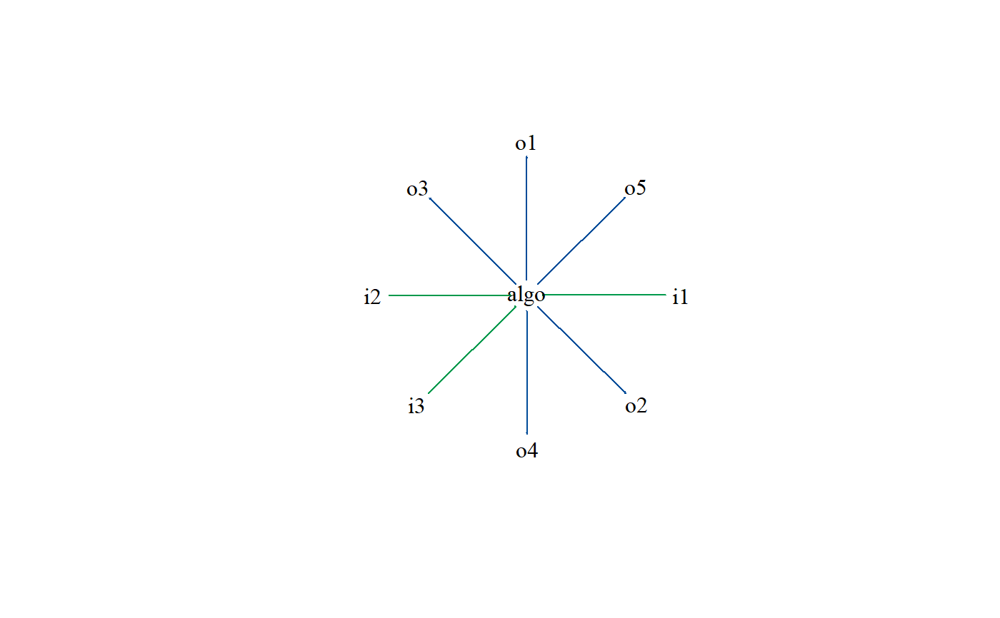
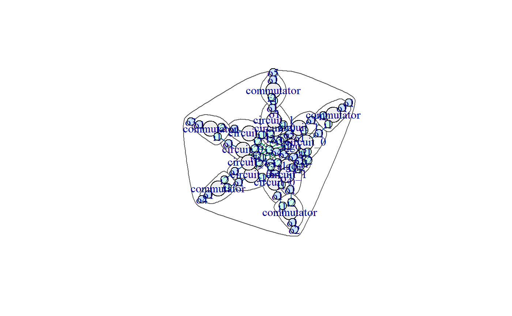

split.RdDecompose a truth table algorithm into two sub-truth table algorithm with an arbitrage bit (positioned last) to switch between the two nicely packaged into a new composite algorithm.
split(algo, ...)
| algo | The truth table algorithm to be splitted (algo_tt) |
|---|---|
| ... | For future usage |
A composite algorithm that has an identical truth table to original truth table algorithm but where the truth table has been split in two and an arbitrage bit is used (algo_composite)
logical_equivalence
Other transformations: splitting_truth_tables
# Pick a random input dimension dim_i <- sample(x = 2:6, size = 1, replace = TRUE); # Pick a random output dimension dim_o <- sample(x = 2:6, size = 1, replace = TRUE); # Create a truth table algorithm of desired dimensions truthtable_algo <- algo_tt$new(dim_i = dim_i, dim_o = dim_o); # Randomize the truth table outputs, we end up with a random deterministic algorithm truthtable_algo$do_randomize_outputs();#> 000000 > 11 #> 100000 > 00 #> 010000 > 10 #> 110000 > 10 #> 001000 > 10 #> 101000 > 10 #> 011000 > 11 #> 111000 > 00 #> 000100 > 01 #> 100100 > 11 #> 010100 > 01 #> 110100 > 01 #> 001100 > 11 #> 101100 > 10 #> 011100 > 11 #> 111100 > 00 #> 000010 > 00 #> 100010 > 11 #> 010010 > 10 #> 110010 > 01 #> 001010 > 01 #> 101010 > 11 #> 011010 > 10 #> 111010 > 01 #> 000110 > 01 #> 100110 > 10 #> 010110 > 11 #> 110110 > 00 #> 001110 > 00 #> 101110 > 11 #> 011110 > 11 #> 111110 > 10 #> 000001 > 01 #> 100001 > 00 #> 010001 > 01 #> 110001 > 00 #> 001001 > 00 #> 101001 > 00 #> 011001 > 11 #> 111001 > 00 #> 000101 > 01 #> 100101 > 10 #> 010101 > 00 #> 110101 > 11 #> 001101 > 00 #> 101101 > 11 #> 011101 > 10 #> 111101 > 00 #> 000011 > 10 #> 100011 > 11 #> 010011 > 00 #> 110011 > 10 #> 001011 > 00 #> 101011 > 11 #> 011011 > 10 #> 111011 > 00 #> 000111 > 10 #> 100111 > 00 #> 010111 > 01 #> 110111 > 00 #> 001111 > 01 #> 101111 > 00 #> 011111 > 00 #> 111111 > 01# Split the random truth table algorithm and retrieve the resulting composite algorithm splitted_algo <- split(truthtable_algo); for(test_counter in 1:3){ # Pick a random input value n <- bnum$new(dim = dim_i)$randomize(); print(paste0("Input: ", n$format(), ", output of truth table algo: ", truthtable_algo$exec(n)$format(), ", output of splitted algo: ", splitted_algo$exec(n)$format())); }#> [1] "Input: 001000, output of truth table algo: 10, output of splitted algo: 10" #> [1] "Input: 101110, output of truth table algo: 11, output of splitted algo: 11" #> [1] "Input: 100111, output of truth table algo: 00, output of splitted algo: 00"# Plot the original algo truthtable_algo$plot();# Plot the splitted algo splitted_algo$plot();